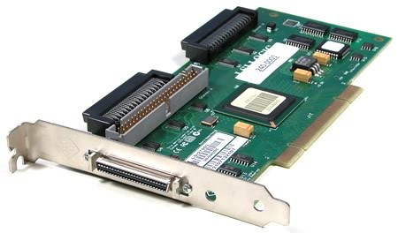
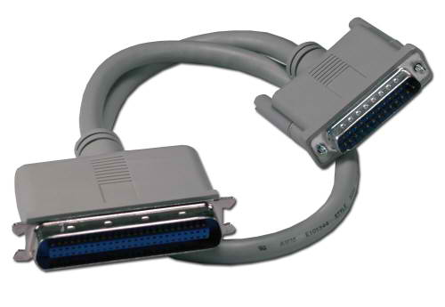
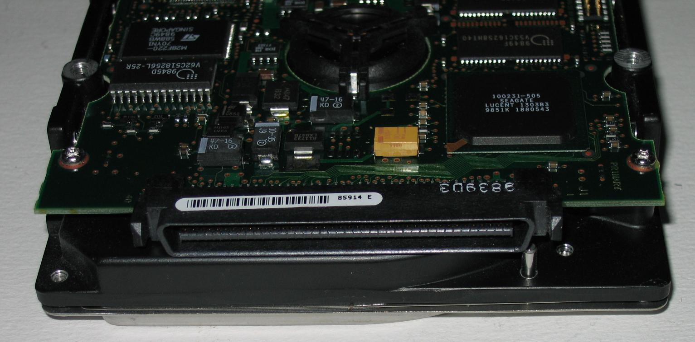

L'histoire du SCSI commence en 1965. Le SCSI est une interface qui permet la prise en charge d'un nombre plus important d'unités (par exemple : disques durs). Elle est surtout utilisés pour sa stabilité au niveau du taux de transfert. C'est un adaptateur SCSI (carte adaptatrice sur un emplacement PCI ou ISA) qui se charge de la gestion et du transfert des données. Le processeur central est alors déchargé de toute commande, ce qui lui permet de s'atteler à une autre tâche simultanément. Le processeur ne fait que dialoguer avec la carte SCSI. ainsi chaque contrôleur SCSI a ses propres caractéristiques, le BIOS du PC n'a donc aucune emprise sur l'interface SCSI, car elle possède elle-même son propre BIOS. Il est toutefois possible d'optimiser l'adaptateur en faisant évoluer le bios de la carte SCSI. Voici les principales normes SCSI actuelles avec leur débit : - Ultra Wide SCSI-2 : 40 Mo/s max - Ultra2 Wide SCSI : 80 Mo/s max - Ultra3 SCSI : 160 Mo/s max - Ultra320 SCSI : 320 Mo/s max La différence principale entre l'IDE et le SCSI, est que le SCSI a besoins d'une carte pour fonctionner. On appelle cette carte une carte contrôleur SCSI. Cette carte prend en charge certaines opérations qui sont habituellement traitées par le processeur, ce qui économise les ressources par rapport à l'IDE et permet d'augmenter légèrement les performances des autres applications. D'autre part, le SCSI peut gérer jusqu'à 7 périphériques au lieu de 4 pour l'IDE. Mais il y a d'autres différences: le SCSI ne communique pas par le schéma maître-esclave mais par des numéros différents attribués à chacun des périphériques. Il faut ensuite fermer la chaîne par une "prise", pour indiquer à la carte qu'il n'y a plus de périphérique connecté.
Les avantages d'un disque dur SCSI :
- Contrairement à d’autres interfaces, lorsque vous l’interface avec les différents types de périphériques SCSI, à l’aide de l’interface s’effectue via le même câble. Dans un environnement non-SCSI, les périphériques tels qu’un contrôleur de bande propriétaires, contrôleur de disque et ainsi de suite, est nécessaire pour connecter leurs périphériques respectives pour le bus système.
- Les Périphériques SCSI du même type ont des caractéristiques similaires (Cela rend facile de remplacer les anciens périphériques par de nouveaux).
- Les périphériques SCSI sont intelligents et indépendants : un contrôleur est intégré à chaque périphérique SCSI. Cela permet à l’ordinateur effectuer d’autres tâches.
- E/s de SCSI est indépendant du bus système. Cela permet aux périphériques travailler avec différents types d’ordinateurs, qui préserve les investissements des matériels d’une société.
- Le SCSI est rapide (10 Mo/s sur 8 bits bus, 20 Mo/s sur un bus 16 bits).
- Les systèmes d'exploitations multi-threads, comme Windows NT, peuvent profiter pleinement des fonctionnalités multitâches du bus SCSI.
Les inconvénients d'un disque dur SCSI :
- Son prix est élevée (un disque SCSI de 300 Go peut coûter environ 600€)

Voici la carte controleur de SCSI

Voici le câble SCSI

Et enfin le disque dur SCSI avec son port SCSI
Hard Drive Mechanic, site sur le fonctionnement des disques durs - Tous droits réservés. Copyright Mentions LégalesContactez Site Créé par Sébastien BUNEL